Monthly AI-related sentence count
countMonthly number of AI-related matched sentences, separated by comments and posts.
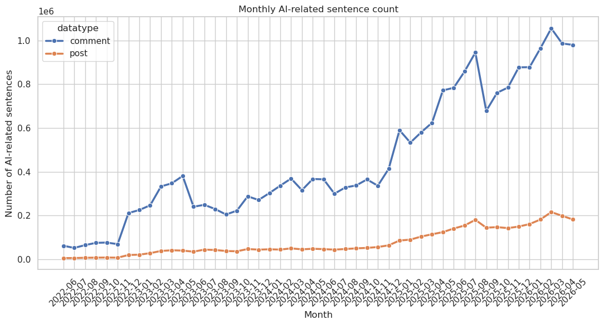
Discussion volume, sentiment, subreddit characteristics, and AI products
Monthly number of AI-related matched sentences, separated by comments and posts.

Monthly mean VADER compound sentiment, separated by comments and posts.
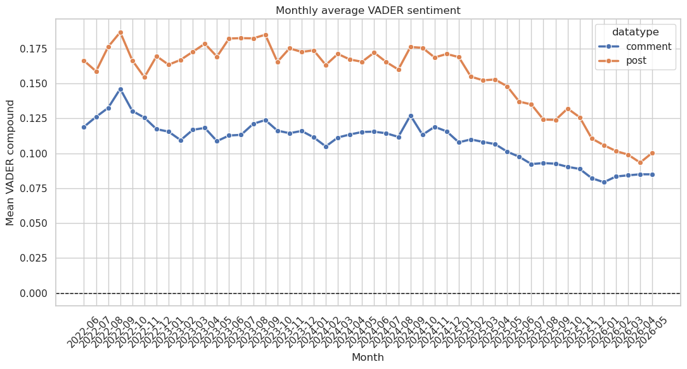
Monthly shares of positive, neutral and negative AI-related sentences for comments and posts.
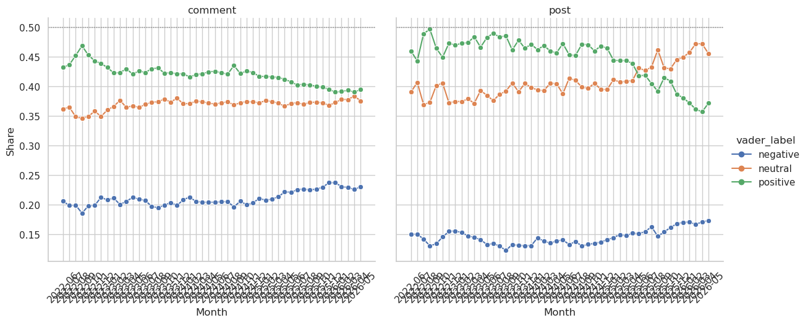
Subreddits with the largest number of unique AI-related posts and comments in 2022.
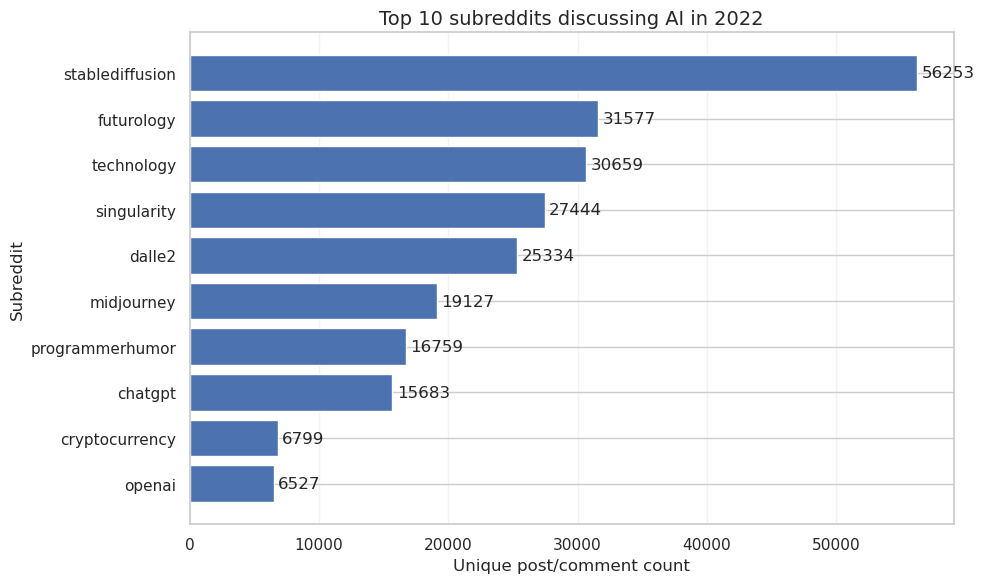
Annual number of unique AI-related posts and comments in each subreddit category.
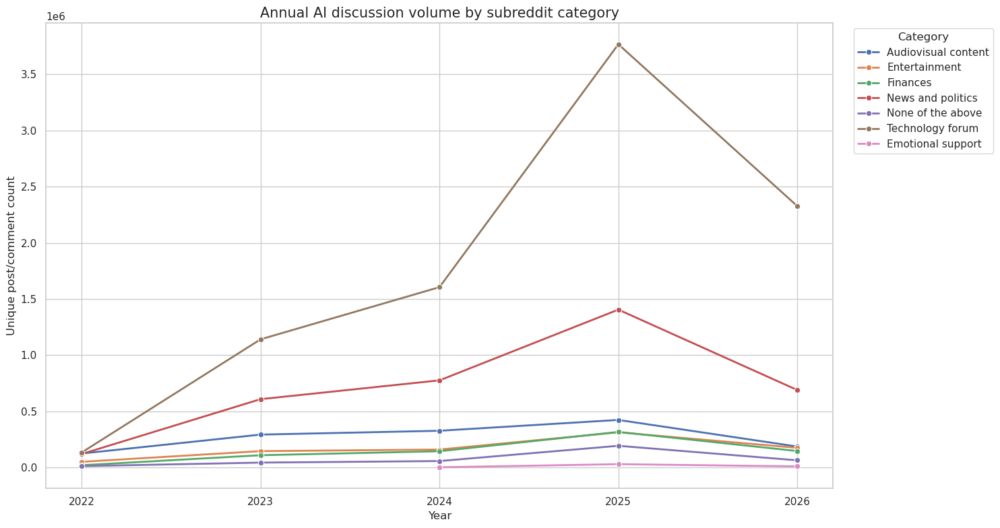
Annual AI discussion volume divided by the number of subreddits represented in each category.
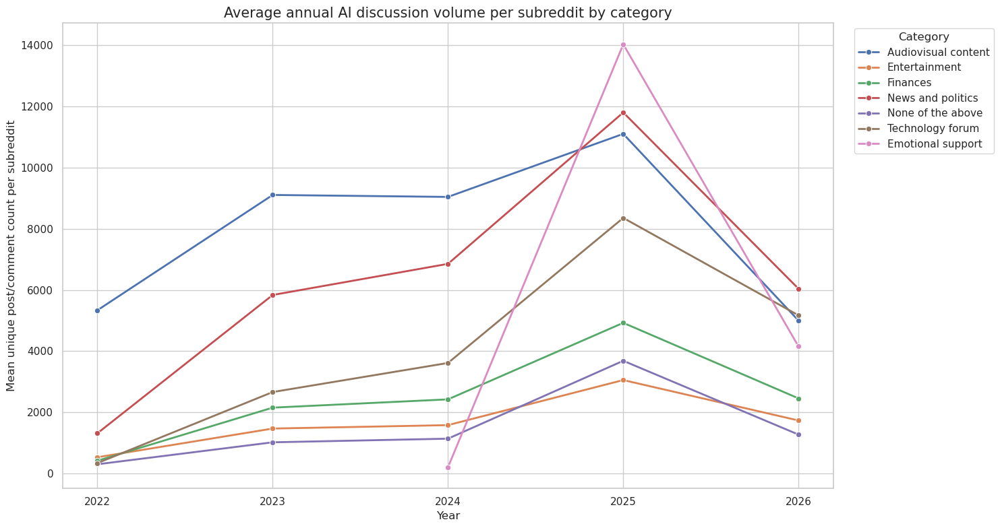
Annual mean VADER compound sentiment within each subreddit category.
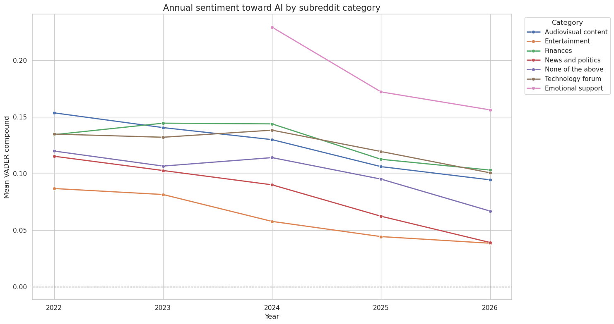
Subreddit-level relationships between mean AI sentiment and age, gender, partisanship, affluence, subreddit size and technology-user proportion.
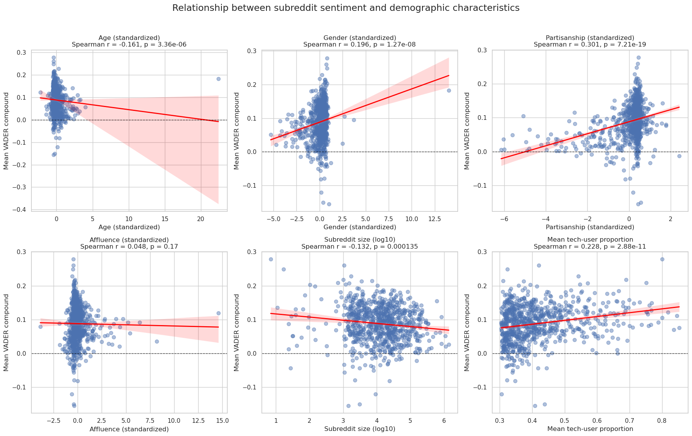
Monthly mean VADER compound sentiment for the most frequently discussed AI products.
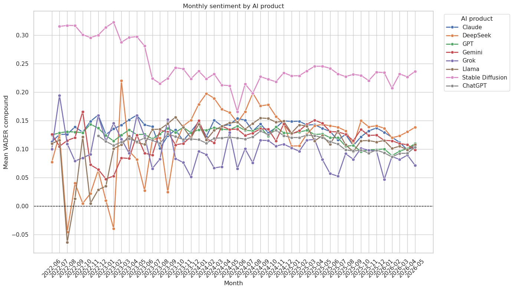
Separate monthly sentiment panels for the most frequently discussed AI products.
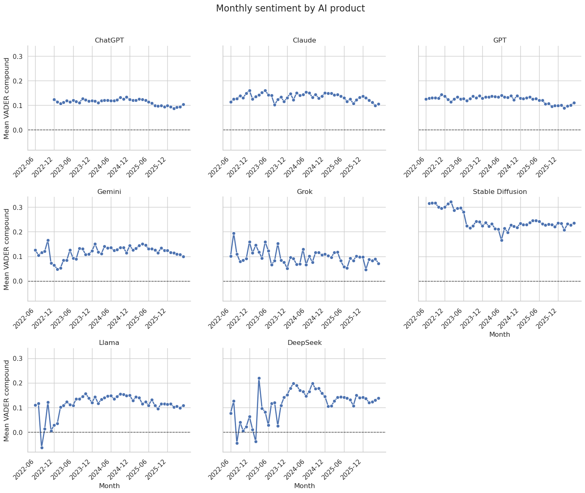
Monthly mean VADER compound sentiment for sentences mentioning ChatGPT.
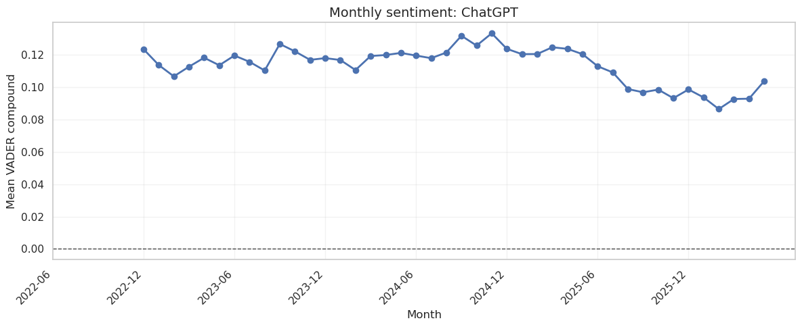